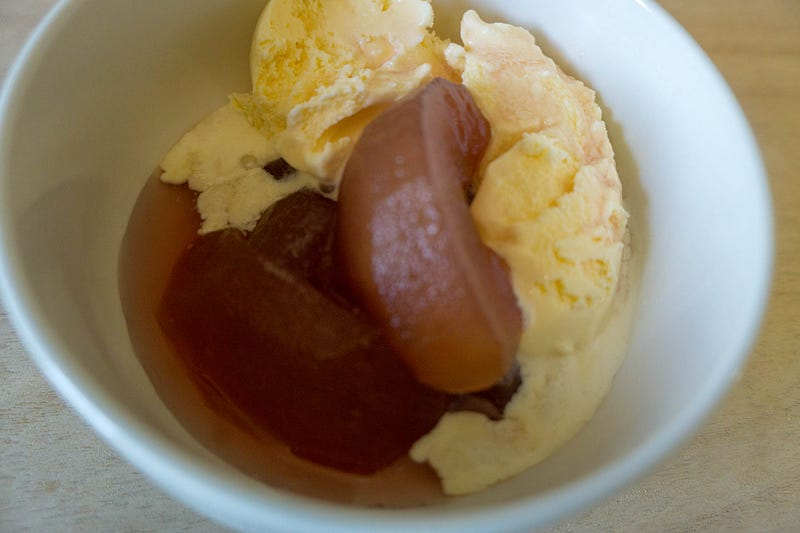
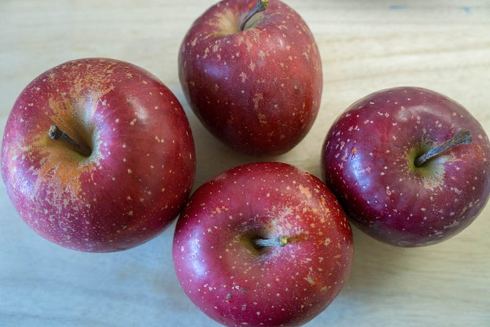
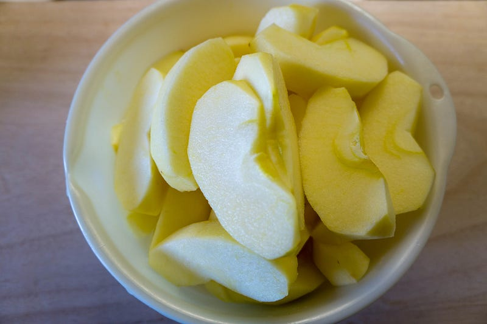
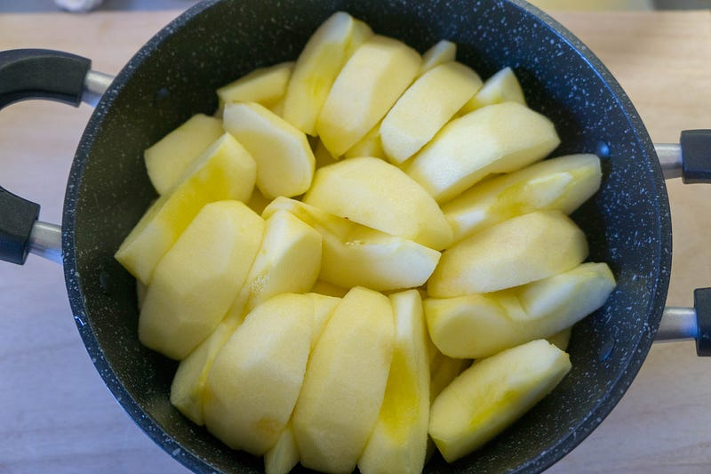
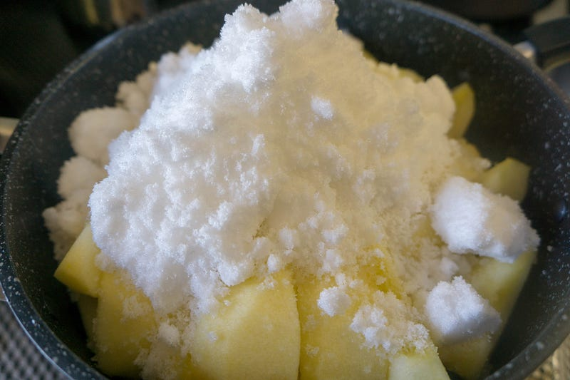
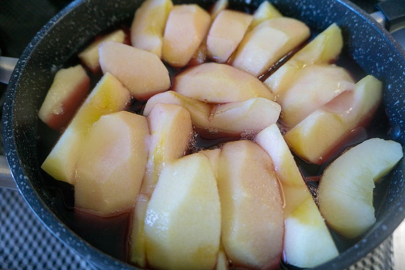
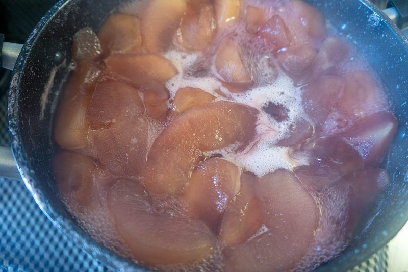
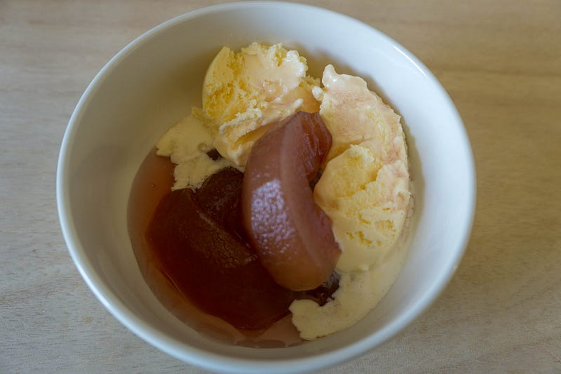

林檎のワイン煮
林檎のワイン煮
約一ヶ月前に妻の実家からたくさん林檎が送られてきた。もうそろそろどうにかしないと… 煮よう。甘く甘く煮て、保存できるようにしよう。

そんな大層なことはしていないので、エントリにするまでもないのですが、まぁ要は使い切らないといけない林檎があったので煮てしまうわけです。これならしばらく保つし、ちょっと冬っぽい良い感じになる。
これは多分JAの店かなんかで売ってるヤツでしょう。銘柄は知らん。若干規格外っぽい。もっと気軽にこういう林檎も買える世の中になっていただきたい。今回はこれを5個使います。約1kg弱。林檎は結構重い。

Amazonって林檎まで売ってるのね…びっくりだわ。うちのはもらい物だから！
□━┳━━━━━━━━━━━━━━━━━━━━━□ ┃■┃ 美味しさのヒミツは、朝晩の寒暖差にあり!! □━┻━━━━━━━━━━━━━━━━━━━━━□ 山形のりんごは、その品質の高さが有名で、実は東京市場で日本一の高値で 取引された…amzn.to
切って皮をむきます。わかんないけど、大量加工にはこの順番のほうが早い気がする。

切れたそばからレモン汁をかけていって変色をふせぎます。かなりすっぱくなっても大丈夫。
ポッカサッポロ ポッカレモン100 450mlが食品・飲料・お酒ストアでいつでもお買い得。当日お急ぎ便対象商品は、当日お届け可能です。アマゾン配送商品は、通常配送無料（一部除く）。amzn.to
レモン汁ごと鍋へ。写真は詰めすぎ。もう少し余裕のある鍋を使ったほうが吹きこぼれの心配がなくて良いかも。

前述したかなり酸っぱくても大丈夫な理由：なぜなら、重量の30％を目安に砂糖をぶっこむからです。50%だとジャムだけど、今回はこれくらいで勘弁してやる。あー、恐ろしい。

赤ワインを入れて、ひたひたになるくらいの水を入れて、中火。煮立ってきたら弱火でとろとろと、お好きなところまでどうぞ。僕はグダグダなくらいが好きです。
赤ワインはなんでもいいので、安いのや、栓をあけてしばらくたってしまったものを使ってしまいましょう。今回のこれは250mlのワインが入ってます。

煮てるとものすごくサングリアが飲みたくなります。

色が入ってきたらお好きなところで火を止めてよいです。なお、僕はこの手の加工フルーツのアクは取りません。
できあがったら温かい林檎にアイスクリームを添えて。すでに冷めている林檎は電子レンジであたためればよろし。

甘い、あたたかい、うまい。罪の味。